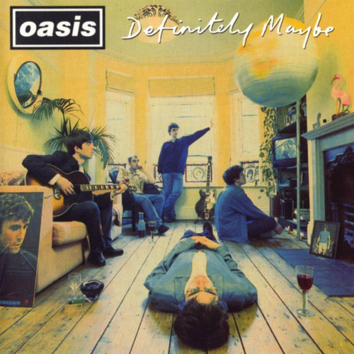
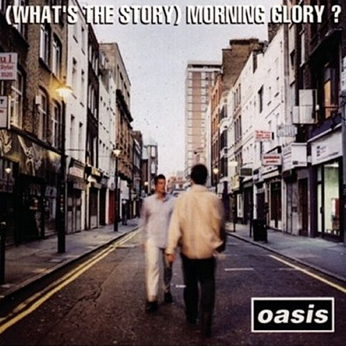
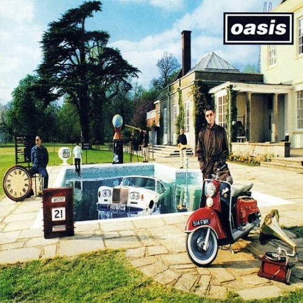
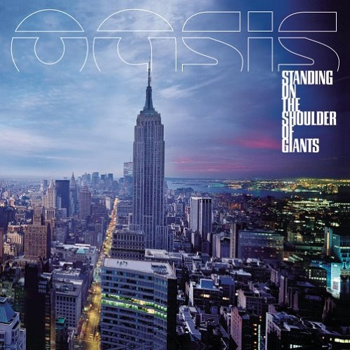
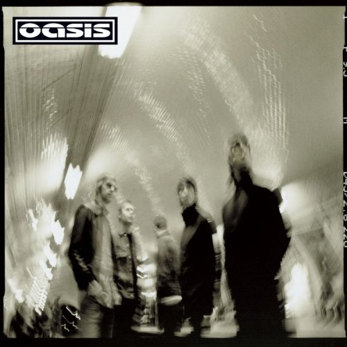
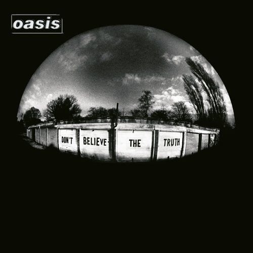
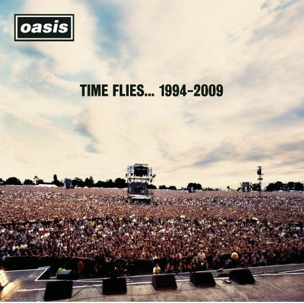
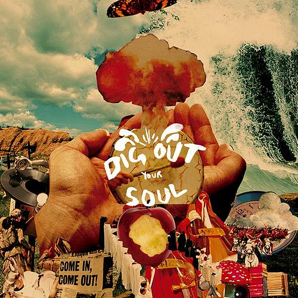

Definitely Maybe발매 연도: 1994 트랙 리스트:
|

What's the Story Morning Glory?발매 연도: 1995 트랙 리스트:
|

Be Here Now발매 연도: 1997 트랙 리스트:
|

Standing on the Shoulders of Giants발매 연도: 2000 트랙 리스트:
|

Heathen Chemistry발매 연도: 2002 트랙 리스트:
|

Don't Believe the Truth발매 연도: 2005 트랙 리스트:
|

Time Flies... 1994-2009발매 연도: 2010 트랙 리스트:
|

Dig Out Your Soul발매 연도: 2008 트랙 리스트:
|